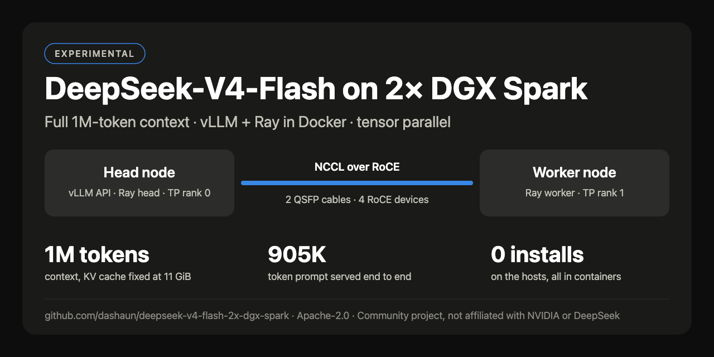
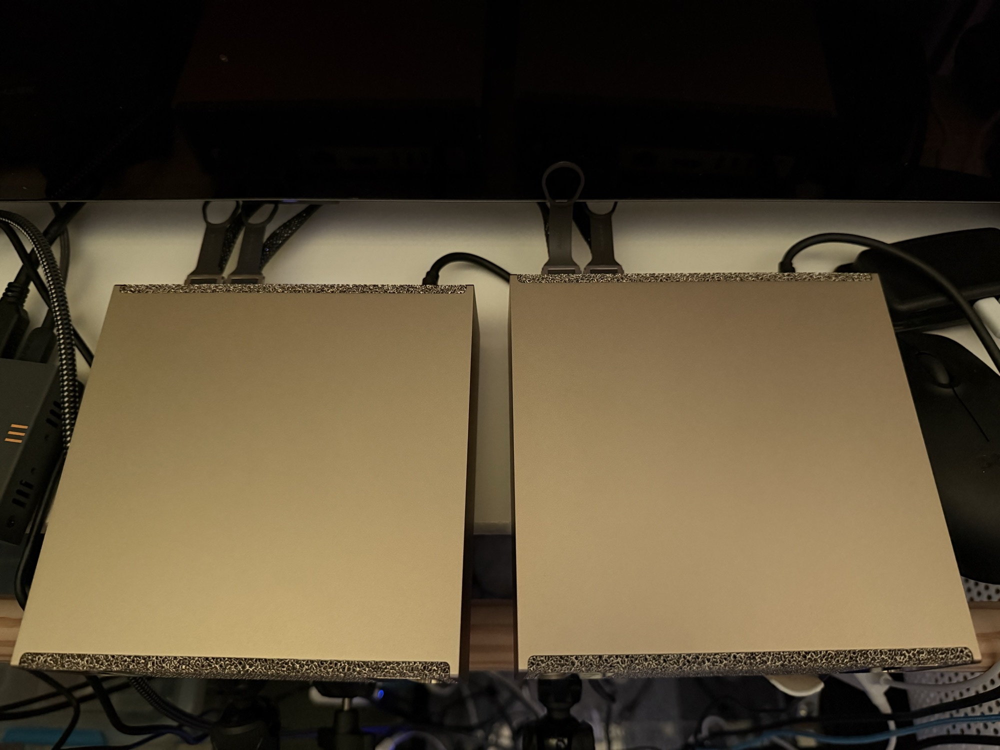
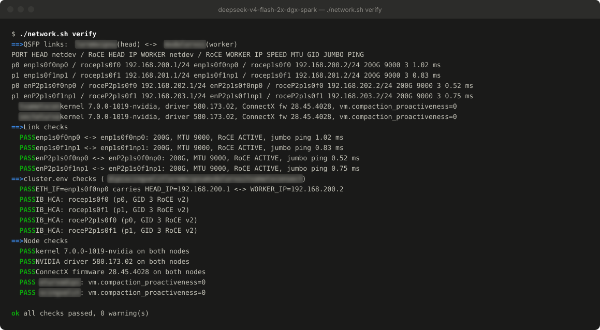
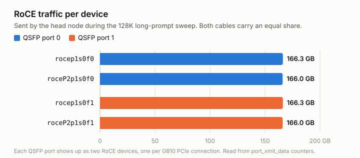
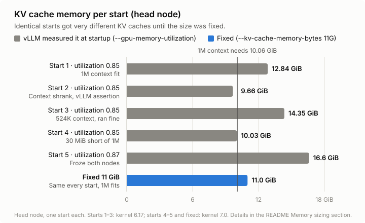
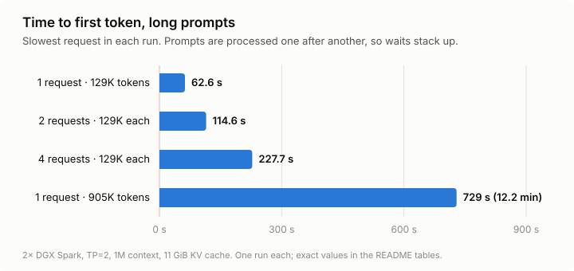

I got some new hardware.
Two NVIDIA DGX Sparks. I connected them to each other with two QSFP cables, and put both of them on my Tailscale network.

A single Spark has 128 GB of memory, shared between the CPU and the GPU. That is a lot of memory. It is also not the point. I did not buy two of them to run two copies of the same small model. I wanted to run something that needed both nodes.
NVIDIA even has a playbook for running vLLM across two Sparks. Follow the steps, pick a big model, done.
Easy, right?
Well, eventually.
I got it working. DeepSeek-V4-Flash is running across both Sparks with the full 1,048,576-token context. It was not as easy as I hoped, so I made a repo to keep track of what I did: dashaun/deepseek-v4-flash-2x-dgx-spark.
This post is the story behind that repo.
The rules I set for myself Link to heading
Before I started, I decided on a few constraints:
- vLLM and Ray run in Docker containers. Nothing gets installed on the Spark hosts.
- The head node is one Spark, and the worker node is the other.
- The model has to need both nodes. Tensor parallelism across the two GPUs, over the QSFP link.
- Everything is driven from my Mac over SSH. No logging in to each node and typing commands in two terminals.
I did this work in a long session with Claude Code driving the terminal, while I made the decisions. That turned out to be a good fit for this kind of project: lots of reading docs, checking logs, and trying the next thing. It also meant that when something failed, we stopped and figured out why before changing anything.
Picking the model Link to heading
My first instinct was “the latest DeepSeek.”
The latest one, DeepSeek-V4.1-Flash, needs about 614 GB of memory at its released precision. The only full-weight DGX Spark setup I could find uses four Sparks. There is a community 2.9-bit quantization that squeezes it onto two, but that means a different base image and very aggressive quantization.
So I settled on DeepSeek-V4-Flash (the 0731 release): a 284B-parameter mixture-of-experts model, 13B active, about 156 GB of weights. Too big for one Spark. Just right for two.
Picking the container image Link to heading
The NVIDIA playbook uses the NGC vLLM container. My plan was to use the newest NGC image.
It did not take long to find out that nobody runs DeepSeek V4 on a DGX Spark with the stock images. The GB10 (compute capability 12.1) needs kernels that just are not in them.
The community has done a lot of work here. I went with eugr/spark-vllm-docker and its spark-vllm-b12x image, which has a recipe for exactly this model on two Sparks. I pinned the image by digest, so both nodes always run identical bits.
eugr’s tooling defaults to running without Ray. I wanted Ray, and I wanted nothing copied onto the hosts, so I wrote my own start.sh, stop.sh and status.sh that drive both nodes over SSH. They run docker commands on each Spark and install nothing.
Two cables, four links Link to heading
Here is something I did not expect: two QSFP cables show up as four RoCE devices on each Spark.
Each physical port appears twice, once for each of the GB10’s PCIe connections. So rocep1s0f0 and roceP2p1s0f0 are the same cable.
That matters, because NCCL has to be told which devices to use. I ended up writing network.sh, which reads everything from both nodes (ports, devices, IPs, MTU, the RoCE v2 GID index) and checks it. It doesn’t change any host settings; it just tells you what you have and whether it’s right.

With all four devices in use, an NCCL all-reduce between the nodes measured 145–185 Gbit/s, over RDMA, not TCP. Later load tests showed traffic split evenly across all four devices.

It works! (the first time) Link to heading
The first full start took about four and a half minutes: load the weights (156 GB total, split across both nodes), compile, capture CUDA graphs. Then the API came up.
vLLM’s --max-model-len auto picked the full 1M-token context. A single request ran at around 41–52 tokens per second, and eight concurrent requests reached 88 tokens per second in total.
I thought I was done.
It doesn’t work (the second time) Link to heading
Before sharing anything, I wanted to prove the whole thing survives a clean stop and start.
It did not.
The second start failed while warming up the model, with an assertion deep in vLLM’s DeepSeek-V4 attention code:
assert active_topk_width >= cm.max_seq_len // self.compress_ratio
AssertionError
It turned out this start had about 3 GiB less memory available for the KV cache than the first one. So auto quietly shrank the context from 1,048,576 to 937,472 tokens, and part of the attention code still assumed the full length.
Same machines. Same image. Same settings. Different result.
I pinned the context at 524,288 tokens and it started cleanly. Half the context, but stable.
The OS update surprise Link to heading
Then I ran sudo apt update and sudo apt upgrade -y and rebooted both nodes.
The upgrade pulled in DGX OS OTA 7.6.0 and a new kernel: 7.0 instead of 6.17. Everything below the kernel stayed the same (driver, ConnectX firmware), and all four links came back healthy.
A reboot also taught me that nothing restarts on its own. The containers are left “Exited”, and ./stop.sh && ./start.sh brings everything back.
Chasing the 1M context Link to heading
I really wanted the full context back, so I pinned --max-model-len 1048576 and tried again.
This time vLLM refused to start. The KV cache needed 10.06 GiB, and it had 10.03 GiB.
30 MiB short.
The fix I reached for was to give vLLM a bigger share of memory, so I raised --gpu-memory-utilization from 0.85 to 0.87.
That froze both Sparks.
SSH stopped answering. Ping went from under a millisecond to several seconds. After 30 minutes of waiting, they needed a hard power cycle. The kernel logs from that boot showed endless “Under memory pressure” messages right up until they stopped. I am just glad nothing got corrupted.
That was the most important lesson of the whole project: on a DGX Spark, the GPU and the operating system share the same memory. A memory setting for the GPU is also a memory setting for the OS. At 0.87, vLLM gave the KV cache 16.6 GiB and left the machines nothing to breathe with.
The fix: stop letting it guess Link to heading
After the power cycle, I looked at what else was running on each node. The desktop (GDM, GNOME, Xorg) was using about 0.8 GB, so I turned it off. I will never use a desktop on these machines.
But freeing host memory was not the real fix. The real problem was that vLLM measures how much memory it can use for the KV cache at startup, and that measurement moved around a lot:

Five starts, same settings, anywhere from 9.66 to 16.6 GiB. The 1M context fit on some of them and not on others.
vLLM has a flag for this: --kv-cache-memory-bytes. Instead of measuring, it uses exactly the size you give it. I set it to 11G, enough for one full 1M-token request plus about 9% headroom, and well below the sizes that had run stably.
Every start now behaves the same.
Did the 1M context actually work? Link to heading
Configured is not the same as working, so I tested it with real long prompts.
- 129K-token prompts: about 63 seconds to the first token.
- Four 129K-token prompts at once: the slowest waited 228 seconds. The prompts are processed one after another, so the waits stack up.
- A 904,911-token prompt: 12.2 minutes to the first token, then 42 tokens per second. No errors, and the server stayed healthy.

Free memory on both hosts stayed above 8 GB the whole time.
The full 1M-token context works end to end.
Why I made a repo Link to heading
By the end I had scripts, a network checker, a load tester, a memory-sizing rule, and a list of things that had bitten me. Next time I rebuild these nodes, or someone else tries the same thing, I don’t want to rediscover all of it.
So I wrote it down: dashaun/deepseek-v4-flash-2x-dgx-spark.
It includes:
start.sh,stop.sh,status.sh: bring both nodes up and down from one machine, with nothing installed on the hosts.network.sh: discover and verify the QSFP/RoCE setup, and write the right settings into the config.loadtest.py: concurrency and long-prompt tests, with per-cable RoCE traffic.- A README with the measured results, the memory-sizing rules, troubleshooting for every failure above, and links to all the sources and community projects I leaned on.
It is experimental. It was tested on one pair of Sparks, it depends on a community container image with a vLLM development build, and the API has no authentication. The README says all of that up front.
What I learned Link to heading
- Two QSFP cables are four RoCE devices. Use all four, and verify them before you blame the model.
- The newest model is not always the right model. Start from what fits.
- Stock images are not enough for new hardware. The community builds the good stuff first. Use it, credit it, and pin it.
- Test a clean restart before you celebrate. My first success hid a problem that only showed up on the second start.
- On unified memory, GPU memory settings are OS memory settings. Be conservative, and don’t nudge them “just a little” on a live system.
- Don’t let the runtime guess when you can tell it. A fixed KV cache size turned “sometimes works” into “always works.”
- Write it down. That is what the repo is for.
If you have a pair of DGX Sparks, give it a try, and let me know what breaks.
A note on how this post was edited Link to heading
I finished editing this blog post using OpenCode and DeepSeek V4 Flash, running on the exact setup this post describes.
DeepSeek V4 Flash and OpenCode work so well together that I dropped my two $200/month subscriptions (Claude and Codex) and switched to a $200/year subscription and a $20/month subscription instead. The savings are real, and I’m getting better results.
In about two years, this will have paid for itself. Until then, I’m going to be token-maxing to get the most bang for the buck.
See also Link to heading
- dashaun/deepseek-v4-flash-2x-dgx-spark — the repo with the scripts, network checker, load tester, and notes.